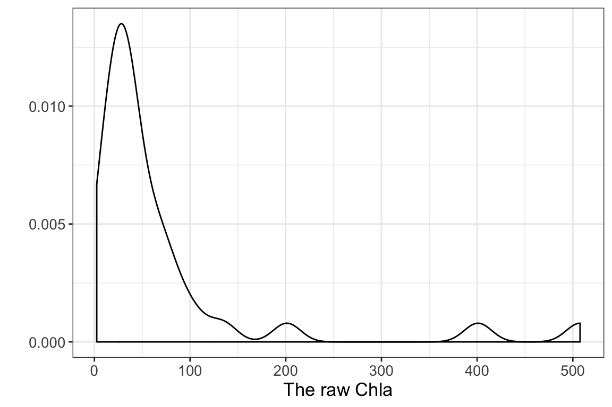
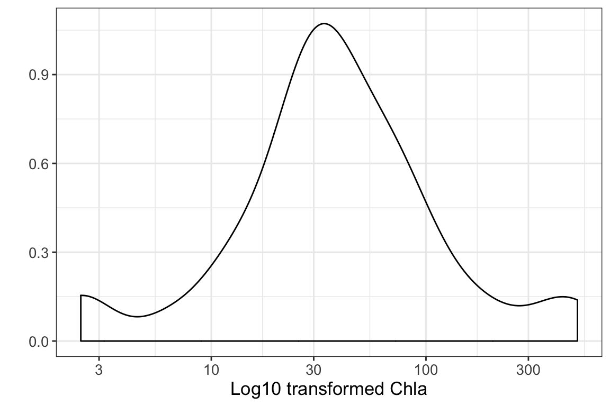
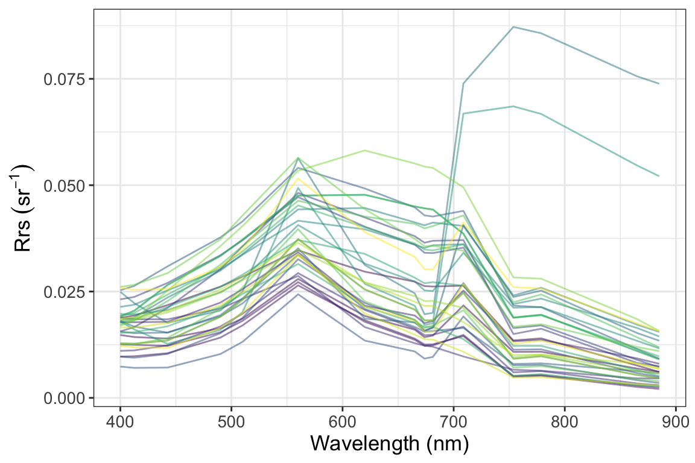
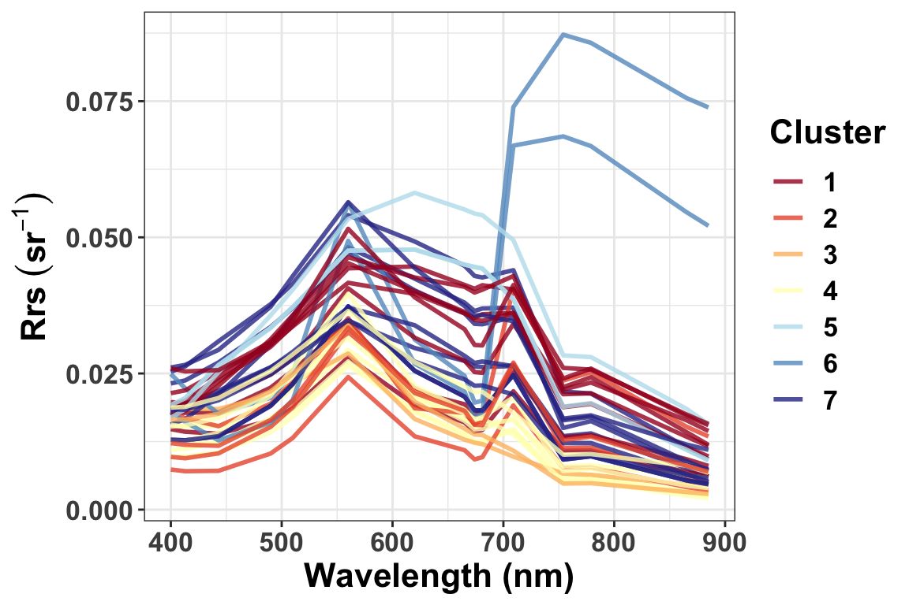
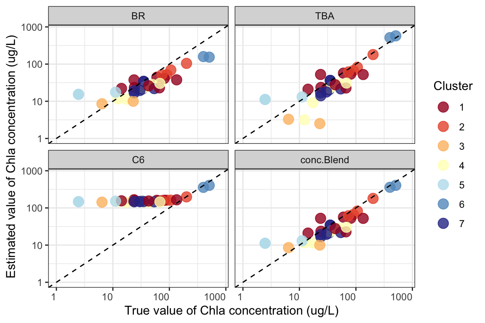
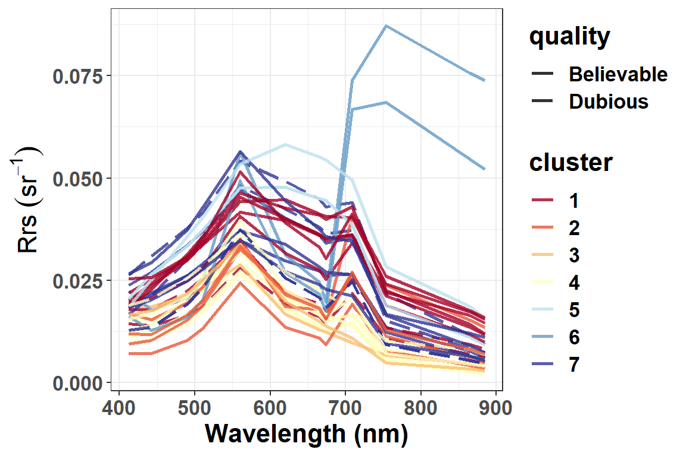

New_Data_Running_FCMm.RmdDear users, the four vignettes of FCMm were provided in this package to demonstrate the usage and application to obtain the cluster number, to train the user-defined data set, to apply the default FCMm to new data (such as Chla concentration estimation), and the imagery data.
Here are the step-by-step demos:
This demo shows how to apply FCMm to a new data set if users just want to run it by the default cluster spectra and fuzzifier. The required data sets are WaterSpec35 and Bi_clusters. The former is a dataset with water spectra of inland waters and corresponding Chla concentration (ug/L unit). The latter one is the seven water cluster spectra which trained by FCM-m method (see more details in Bi et al. (2019))
Note_1: Have to know that WaterSpec35 is ONLY for the testing of FCMm in this package. Therefore, if you want to use this dataset to your research, you should contact us to ask for the permit at first via bishun1994@foxmail or liyunmei@njnu.edu.cn. I hope you can understand.
Note_2: we also need package tidyverse to string and data processing.
Note_3: The section FCM running used the default Rrs clusters. However, the input of Rrs data may not match the default wavelength settings such as quality control or atmospheric correction failure or so. Anyway, I have provided another section One more thing if your wavelength is not matching with the default. I hope you have a good day.
At first, it is necessary to check out the dataframe situation before clustering (I suppose it is also important to do that in any other researches). The density plots show that the corresponding Chla concentration is severely skewed so it allows us to do a log10-transformed when estimate or validate the candidate algorithms.
Function plot_spec_from_df suppports a quick look about the spectral dataframe. Just type help(plot_spec_from_df) to see more details.
Note: The input of plot_spec_from_df should be a matrix or data.frame with colnames that could be transformed into the numeric — as the x-axis of the plot. Since the return of plot_spec_from_df is a ggplot list, you could modify or add it for your purpose (such as add labs or themes).


p.spec <- plot_spec_from_df(Rrs) +
labs(x='Wavelength (nm)',y=expression(Rrs~(sr^-1))) +
theme_bw() +
theme(legend.position='none', text=element_text(size=18))
print(p.spec)
Function apply_FCM_m provides many parameters for users to decide the process for their desired results. In the following case, result <- apply_FCM_m(Rrs=Rrs) is equal to apply_FCM_m(Rrs=Rrs, wavelength=wavelength.default, Rrs_clusters=Rrs_clusters.default, stand=FALSE, default.cluster=TRUE, m_used=1.36, option.plot=TRUE). You can see more details by typing help(apply_FCM_m)
result <- apply_FCM_m(Rrs=Rrs, option.plot=TRUE)
summary(result)
#> Length Class Mode
#> x 15 data.frame list
#> x.stand 15 data.frame list
#> d 245 -none- numeric
#> u 245 -none- numeric
#> cluster 35 -none- numeric
#> quality 35 -none- character
#> m_used 1 -none- numeric
#> K 1 -none- numeric
#> p.group 9 gg list
#> dt.plot 5 data.frame list
result$p.group
result list contains several result by apply_FCM_M (partly same to FD list):
stand=F
help(apply_FCM_m)
Our package provides a new framework to estimate Chla concentration. The main point is algorithm blending which uses the advantages of candidates algorithm for their optimizing water type (such as TBA for turbid water and BR for relatively clear water). The three build-in algorithms used in FCMm are TBA, BR, and C6. Note that the C6 model was designed for water bloom (or called harmful algal bloom waters with extremely high Chla concentration or scums). Please see more details in help(FCM_m_Chla_estiamtion).
dt_Chla <- FCM_m_Chla_estimation(Rrs=data.frame(Rrs665=Rrs$`665`,
Rrs709=Rrs$`708.75`,
Rrs754=Rrs$`753.75`),
U=result$u)
#> Note: this function is designed for OLCI or MERIS band settings!
#> The following bands (also as their names) must be contained in Rrs:
#> Rrs665 Rrs709 Rrs754
dt_Chla$cluster <- result$cluster %>% as.character
dt_Chla$Chla_true <- WaterSpec35$Chla
options(scipen=10000)
subset(dt_Chla, select=c('cluster','Chla_true','BR','TBA','C6','conc.Blend')) %>%
reshape2::melt(., id=c('cluster','Chla_true')) %>%
ggplot(data=.) +
geom_point(aes(x=Chla_true,y=value,group=cluster,color=cluster),
alpha=0.8, size=4) +
scale_x_log10(limits=c(1,800)) +
scale_y_log10(limits=c(1,800)) +
scale_color_manual(values=heatmaply::RdYlBu(result$K)) +
labs(x='True value of Chla concentration (ug/L)',
y='Estimated value of Chla concentration (ug/L)',
color='Cluster') +
geom_abline(intercept=0, slope=1, linetype=2) +
facet_wrap(~variable, nrow=2) +
theme_bw() +
theme(axis.text.x.bottom = element_text(hjust=1))
MAPEs <- NULL
i <- 1
for(model in c('BR','TBA','C6','conc.Blend')){
MAPEs[i] <- cal.metrics(x=dt_Chla$Chla_true %>% log10,
y=dt_Chla[,model] %>% log10,
name='MAPE')
names(MAPEs)[i] <- model
i <- i + 1
}
print(MAPEs)
#> BR TBA C6 conc.Blend
#> 18.08897 26.39958 29.77310 15.13960
MAEs <- NULL
i <- 1
for(model in c('BR','TBA','C6','conc.Blend')){
MAEs[i] <- cal.metrics(x=dt_Chla$Chla_true,
y=dt_Chla[,model],
name='MAE2')
names(MAEs)[i] <- model
i <- i + 1
}
print(MAEs)
#> BR TBA C6 conc.Blend
#> 1.793332 1.760389 4.452538 1.579381It is glad to see the Blending result performs better than others with its log-transformed MAPE = 15.14 % and MAE = 1.58 ug/L.
As mentioned before, the input Rrs may do not match the default wavelength from wavelength.default. This section will show you how to do that kind of clustering by FCMm.
Here we suppose the selected bands are 412.5, 442.5, 490, 510, 560, 620, 665, 673.75, 708.75, 753.75, 865, and 885. Note that the m.used of FD list may change a little if different band number is used. But we assume the difference is negligible (i.e., still equal to the former one 1.36).
Rrs_sub <- subset(Rrs, select=c(`412.5`,`442.5`,`490`,`510`,
`560`,`620`,`665`,`673.75`,
`708.75`,`753.75`,`865`,`885`))
wavelength.sub <- c(412.5,442.5,490,510,
560,620,665,673.75,
708.75,753.75,865,885)
Rrs_clusters.sub <- which(names(Rrs_clusters.default) != 'X400' &
names(Rrs_clusters.default) != 'X681' &
names(Rrs_clusters.default) != 'X779') %>%
Rrs_clusters.default[,.]
# Note the parameter settings in this function `default.cluster=F`
result_sub <- apply_FCM_m(Rrs=Rrs_sub, wavelength=wavelength.sub,
Rrs_clusters=Rrs_clusters.sub,
stand=F, default.cluster=F, option.plot=T)
result_sub$p.group